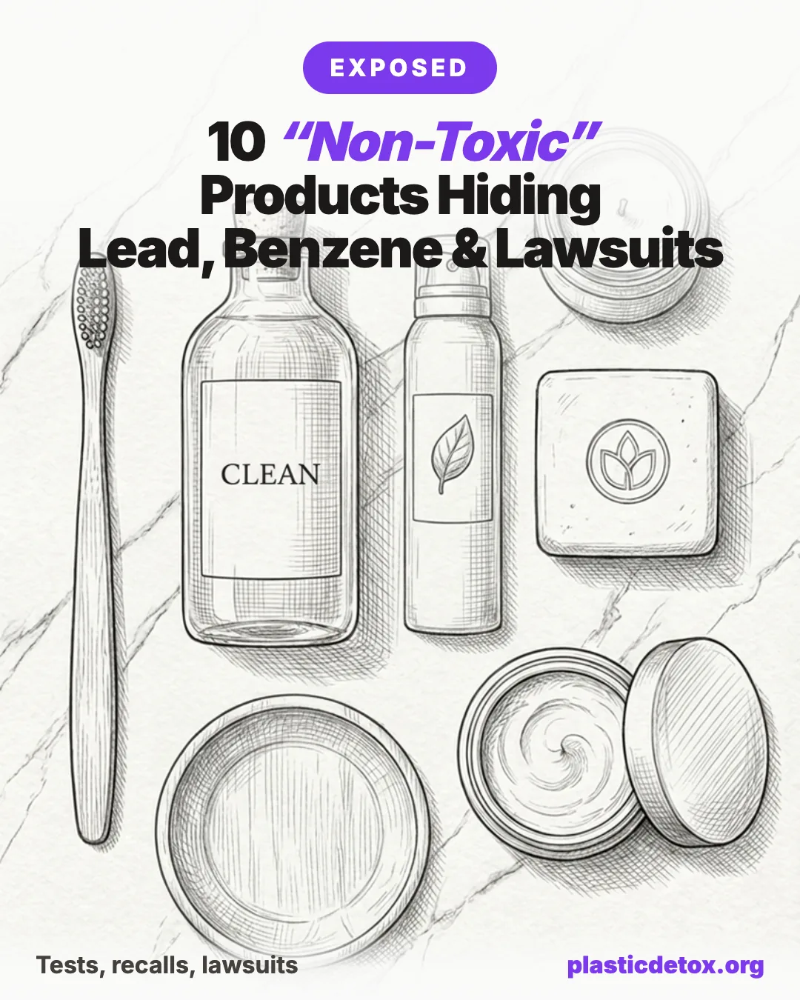

The "Clean" Lie: 10 Products That Failed Tests or Got Sued

What lab tests, FDA recalls, and active class actions reveal about the products you trust most.
All brand claims here are based on independent lab tests, FDA recalls, or court filings as of May 2026. Formulations and case statuses change. Verify the current ingredient list and recall database before purchase.
The 30 Second Summary
- "Clean" is a marketing word, not a legal one. No FDA standard, no FTC rule, no enforcement body. Retailer programs like Clean at Sephora and Ulta Conscious Beauty are policed only by the retailer.
- Lead Safe Mama has tested dozens of toothpastes. Roughly 90% tested positive for lead, 65% for arsenic. Daily use picks from our store: Weleda Salt Toothpaste for adults and Spry Kids Tooth Gel for kids.
- Valisure found benzene in deodorants, sunscreens, dry shampoos, and hand sanitizers. The contamination came from propellants and ethanol sources, not the listed formula. Skip aerosols.
- Sunscreen swap (lotion, mineral, EWG verified): Earth Mama Baby SPF 40.
- Deodorant swap (no aerosol, plant based): Each & Every aluminum free.
- Laundry swap (no liquid bottle, no 1,4 dioxane risk): Blueland Laundry Detergent Tablets.
- Four certifications worth trusting: EWG Verified, MADE SAFE, EPA Safer Choice, USDA Organic. Everything else is marketing.
The Problem with "Clean"
The word "clean" has no legal definition in the United States. There is no FDA standard, no FTC rule, no federal enforcement body. A brand can put "clean," "non toxic," "natural," or "plant based" on a label and mean almost anything it wants.
This article is not a roundup of obvious offenders. The products below are marketed specifically to families who already read labels. The evidence here comes from three sources only: independent third party lab testing, official FDA recall announcements, and active or recently settled class action lawsuits. Every brand named is tied to a verifiable test result, recall page, or court filing.
For each product you will see what was tested or alleged, what was actually found, and what the company did in response. Then a swap that has been independently verified, not just self labeled clean.
How "Clean" Got Hijacked
The regulatory gap
The FDA allows up to 10,000 parts per billion of lead in fluoride free toothpaste. There is no enforceable federal definition for "clean," "non toxic," or "natural" in personal care. Cosmetic ingredient testing is not required before products go on the shelf. The Modernization of Cosmetics Regulation Act (MoCRA), signed in late 2022, is the first major update to US cosmetics law since 1938 and is still being phased in.
Why retailer "clean" programs do not protect you
Sephora's "Clean at Sephora" and Ulta's "Conscious Beauty" programs each set their own ingredient exclusion lists. A 2022 class action against Sephora was dismissed because the court ruled their definition was disclosed on the website. A new October 2025 nationwide class action against Ulta alleges products in its Conscious Beauty program contain ingredients on its own banned list. Both programs are defined and policed by the retailer, not by an independent body. There is no automatic enforcement when a participating brand violates the criteria, only litigation.
The three failure modes covered here
Contamination introduced during manufacturing (heavy metals, benzene, 1,4 dioxane), undisclosed fragrance ingredients hiding behind a single word on the label, and outright misleading marketing claims that have triggered class action lawsuits. None of these are theoretical. Each is documented in the section below.
The 10 Products
1. Mineral toothpastes that tested positive for lead
The claim: Fluoride free, prebiotic, hydroxyapatite, "clean" oral care.
What testing found: The Lead Safe Mama Community Collaborative Laboratory Testing Initiative has tested dozens of toothpastes since 2024. Roughly 90% tested positive for lead and 65% for arsenic at varying levels. Brands that tested positive include Crest, Sensodyne, Tom's of Maine, Davids, Dr. Jen, and PrimalLife Dirty Mouth, among others. Levels vary significantly between brands; full lab reports are published at tamararubin.com.
The PrimalLife Premium Dirty Mouth Powdered Mineral Toothpaste tested positive for lead in 2025. The level was below the FDA's 10,000 ppb threshold for fluoride free toothpaste, but the FDA, CDC, and EPA all state there is no known safe level of lead exposure for humans. The likely common contributor across most contaminated products is silica, an ingredient in nearly every contaminated formula.
Company response: Most affected brands have not reformulated. Several responded publicly by referencing the FDA threshold rather than the no known safe level position of US health agencies.
Why it matters: Many of these products are marketed to families switching away from conventional toothpaste because they want fewer chemicals. The contamination is invisible on the label.

Weleda Salt Toothpaste
NATRUE certified. Sea salt and silica base. No fluoride, no SLS, no synthetic foaming agents. Heritage brand (Weleda, 1921).
View →
Spry Kids Tooth Gel
Xylitol formula, safe to swallow. Strawberry banana. No fluoride, no SLS, no parabens, no artificial colors.
View →2. Suave 24 Hour antiperspirant (benzene)
The claim: Mainstream antiperspirant, marketed as gentle and effective.
What happened: In 2021, the independent pharmacy Valisure tested 108 deodorant and body spray products. Suave 24 Hour Protection Aerosol tested positive for benzene at levels up to 5.21 parts per million, exceeding the FDA's 2 ppm conditional limit. Benzene is a Group 1 IARC carcinogen, classified as known to cause cancer in humans.
Unilever issued a nationwide recall in March 2022. A $2 million class action settlement in Barnes v. Unilever United States Inc., No. 1:21-cv-06191 (N.D. Ill.) was preliminarily approved in 2024, covering anyone who purchased the products between January 1, 2018 and March 7, 2024.
Old Spice, Secret, Brut, and Sure aerosol antiperspirants were recalled the same year for the same issue. Power Stick deodorant was recalled in July 2025 (over 67,000 cases) for separate manufacturing deviations.
Why it matters: The benzene was a propellant contaminant, not a listed ingredient. There was no way for a consumer to know from the label.

Stick format, no aerosol propellant. Plant based, no aluminum, no propylene glycol, no PEG, no dimethicone. Made in the USA.
3. Aerosol sunscreens, including "mineral" versions
The claim: Reef safe, mineral, baby safe, broad spectrum.
What testing found: Valisure tested 294 sunscreen and after sun batches from 69 companies. About 27% contained detectable benzene. Both chemical and mineral formulations were affected. The four brands with the highest contamination were Neutrogena, Sun Bum, CVS Health, and Fruit of the Earth.
Johnson and Johnson recalled five Neutrogena and Aveeno SKUs in 2021. Coppertone (Beiersdorf) and Banana Boat (Edgewell) added their own broader recalls separately, covering additional SKUs across the same wave.
Lawsuit status: A $1.75 million voucher settlement against J and J was sent back to a Florida lower court in June 2024 after the appeals court sided with objectors. Personal injury cases continue, including an August 2024 settlement involving a father who alleged his son's leukemia was caused by benzene contaminated Neutrogena sunscreen.
The FDA issued January 2025 guidance recommending that all sunscreen manufacturers conduct benzene risk assessments. There is no mandatory rule yet.
Why it matters: Spray formulations are the highest risk format. The propellant is often the contamination source, which means even mineral sunscreens in aerosol cans have shown contamination. See our full mineral sunscreen guide for vetted lotion picks.

Non nano zinc oxide. EWG verified, NSF certified contents. Lotion format, no propellant, no benzene risk.
4. "Plant based" baby wipes (Honest Company)
The claim: Plant based, sensitive skin, baby safe.
The product labeling lawsuit: An August 2022 class action filed in California federal court alleges that Honest Company "plant based wipes" contain numerous synthetic and artificial ingredients, despite packaging that places "plant based" beneath images of leaves, aloe, and almonds.
This is not new ground for the brand on consumer claims. Honest paid a $7.35 million class action settlement in 2017 over "all natural" and "no harsh chemicals" claims for shampoo, body wash, lotion, and sunscreen. They paid another $1.55 million for misleading laundry detergent and dish soap claims the same year.
Separate matter (not consumer labeling): A securities class action concerning IPO disclosures to investors was resolved in December 2024 by a mediator's proposal of $20 million from Honest plus $7.5 million from Catterton, the private equity owner. This case is about disclosures to shareholders, not product claims, and is included for completeness only.
Why it matters: Repeated consumer labeling litigation across product categories spanning nearly a decade. Consumers paying premium prices for ingredient claims that have been challenged in court more than once.
Beyond wipes, this is a category-wide problem. Our non toxic baby and toddler guide walks through every category from bottles and feeding to bath and skincare, and the Plastic Detox Baby Registry is a complete vetted setup if you are starting from scratch.

Wood pulp cloth, not plastic. Six clean ingredients, EWG Verified and MADE SAFE, tested non detect for PFAS. Fragrance free for newborn skin. (We dropped WaterWipes over a 2025 microplastics class action challenging its plastic free claim.)
5. Liquid "clean" laundry detergents (1,4 dioxane)
The claim: Plant based, biodegradable, free of harsh chemicals, sensitive skin formulas.
What is in them: Sodium laureth sulfate (SLES) and PEG compounds are produced through a process called ethoxylation. The byproduct is 1,4 dioxane, an EPA classified probable human carcinogen. Because it is a contaminant rather than an added ingredient, it does not appear on the label.
New York banned consumer products with more than 2 ppm of 1,4 dioxane, phased in between 2022 and 2023. Many national brands quietly reformulated for the New York market only. Even some products marketed as "non toxic" still contain SLES, ethoxylated surfactants, undisclosed fragrance, propylene glycol (also potentially contaminated with 1,4 dioxane), or methylisothiazolinone, a known sensitizer.
The fragrance trap: Conventional dryer sheets and fabric softeners coat fabric with chemicals that stay on clothes through wear. A University of Washington study found 25 volatile organic compounds, including 7 hazardous air pollutants like acetaldehyde and benzene, coming out of dryer vents from scented laundry products.
Better swaps: Tablets and powders generally need fewer preservatives and avoid the ethoxylated surfactant problem entirely. EPA Safer Choice and EWG Verified are the two certifications that meaningfully filter for this. See our cleaning product guide for the deeper breakdown.

Plastic free dry tablets in a paper canister. No SLES, no PEG, no 1,4 dioxane risk, no liquid plastic bottle. Refills available.
6. "Clean" beauty at Sephora and Ulta
The claim: Sephora's "Clean at Sephora" and Ulta's "Conscious Beauty" programs use ingredient exclusion lists to designate products as clean.
Sephora (case dismissed): A November 2022 class action alleged that Clean at Sephora mascaras contained synthetic ingredients. The court dismissed the case, ruling that Sephora's published criteria (no parabens, sulfates, phthalates, mineral oil, formaldehyde, and others) put the definition in front of consumers.
Ulta (case active): An October 2025 nationwide class action filed by Margaret Garvey alleges that Conscious Beauty products contain ingredients on Ulta's own "Made Without List," including acrylates, phthalates, and aluminum compounds. The case is active as of this writing.
The fragrance loophole: Even brands on a retailer clean list can contain undisclosed fragrance allergens. The word "fragrance" or "parfum" can legally hide over 3,000 chemicals in the US, including phthalates used to extend scent life. The EU now requires 80 plus specific fragrance allergens to be disclosed by name. The US does not.
Why it matters: Retailer clean programs are defined and enforced by the retailer, not by an independent body. There is no testing, no penalty, no enforcement, only the threat of litigation when something is exposed.
Instead of trusting a retailer's clean shelf, vet products by ingredient. The guide covers every category from foundation and mascara to fragrance and cleansers, with the polymers, fragrance loopholes, and certifications that actually mean something.
7. "Natural" scented candles (phthalates and VOCs)
The claim: Soy, "natural," "clean burning," essential oil scented.
The wax issue: Paraffin candles emit benzene and toluene (both classified by IARC as carcinogens) plus formaldehyde and polycyclic aromatic hydrocarbons when burned. Many candles labeled "soy" are actually soy blends with paraffin. Look for "100% soy wax" on the label, not "soy blend."
The fragrance issue: Most commercial candle fragrances are synthetic blends. They often contain phthalates used to make scent last longer. Phthalates are endocrine disruptors associated with reproductive system effects and developmental concerns.
The hexane question: Many commercial soy waxes are processed with hexane, a petroleum solvent. When heated, soy candle products can release formaldehyde and acetaldehyde, both EPA hazardous air pollutants. Lead core wicks have been banned in the US since 2003, but daily use of paraffin candles in enclosed spaces can still meaningfully raise indoor pollutant levels.
Better swaps: 100% beeswax with cotton wicks and no added fragrance. If you want scent, look for properly diluted essential oils in 100% soy or coconut wax with cotton wicks.

Bee Hive Candles 100% Beeswax Pillar
Single ingredient: pure US beeswax. Cotton wick. No paraffin, no synthetic fragrance, no phthalates. Made in Utah.
View →
Bluecorn Beeswax 100% Pure Pillar
Pure US beeswax, cotton wick, no fragrance. Available in raw or filtered finish. Made in Colorado since 1991.
View →8. Dry shampoo aerosols (Unilever recall)
The claim: Quick refresh, "clean" hair, plant based.
The recall: In October 2022, Unilever recalled dry shampoo aerosols across Dove, Nexxus, Suave, TIGI, and TRESemmé due to elevated benzene levels traced to the propellant.
Suave and parent brand Unilever face ongoing personal injury claims from consumers diagnosed with leukemia and other blood cancers after long term use of contaminated aerosol products.
Why it matters for "clean" claims: Dry shampoo is marketed heavily to the wellness audience as a "clean" alternative to washing hair daily. The contamination came from the manufacturing process, not the formula, which is why no label change would have warned consumers. Powder format products avoid the aerosol problem entirely.

Loose powder, no aerosol propellant. Cornstarch base, kaolin clay, essential oils. Glass jar packaging. Made in NYC.
9. Hand sanitizers and aerosol body sprays
The claim: Antibacterial, gentle, clean.
What testing found: Valisure's March 2021 testing found benzene in 16% of hand sanitizer products tested. The pattern of contamination across deodorant, sunscreen, dry shampoo, and hand sanitizer points to a supply chain problem affecting aerosol products and certain ethanol sources broadly, not isolated to any single brand or category.
Pattern recognition: Any aerosol or alcohol based product is worth scrutinizing. The contamination source is typically the propellant or the ethanol, not the active formula. Foam pump and non aerosol formats carry far lower contamination risk.

Pump bottle, no aerosol. Fair trade organic ethyl alcohol, organic glycerin, organic peppermint oil. USDA Organic certified.
10. "Bamboo" baby plates and cups (melamine-formaldehyde composites)
The claim: Eco friendly, biodegradable, natural bamboo, plant based, safe for babies.
What testing found: Most "bamboo" baby plates, cups, and toddler dinnerware sold in the US are not bamboo. They are melamine formaldehyde plastic with bamboo powder used as a filler for color and texture. A February 2025 peer reviewed study by Bechynska et al. (Food Control, University of Chemistry and Technology, Czech Republic) detected melamine and its derivatives in 20 of 21 samples labeled "bamboo." Earlier testing of children's bamboo dinner sets purchased in Bulgaria in 2021 found both formaldehyde and melamine in every product tested, with melamine exceeding the EU Specific Migration Limit (2.5 mg/kg) by up to 2.6x in nearly half.
Recall and regulatory action: The CPSC recalled Primark children's bamboo plates in March 2023 (Recall 23-139) for elevated lead and formaldehyde, including Winnie the Pooh, bear, bunny, and rainbow shapes. Between 2020 and 2024, EU authorities issued over 277 RAPEX recall notices for bamboo plastic products. The European Commission's "Bamboo-zling" enforcement operation flagged 748 cases of unauthorized bamboo powder in plastic food contact materials. The EU banned bamboo melamine food contact materials in February 2021. The US FDA has announced "heightened monitoring of eco bamboo imports" but has not issued a ban or mandatory recall.
The chemicals: Formaldehyde is classified as Carcinogen Category 1B under EU Regulation (EC) No 1272/2008 and as Group 1 (known human carcinogen) by IARC. Melamine is classified as possibly carcinogenic and is linked to renal crystal formation and kidney stones at chronic low doses; the kidneys are its primary toxicity target. Migration of both into food increases sharply above 70°C (158°F), which means hot food, hot liquids, dishwasher cycles, and microwave use all accelerate leaching. The European Commission notes "no acute health risk" from food contact use but "continual exposure to the elevated levels of formaldehyde and melamine has the potential to cause a health concern."
Why it matters: Parents specifically choose "bamboo" baby dinnerware to avoid plastic. They end up with an unregulated plastic that releases more leachate than plain melamine, used daily with hot food by the population most sensitive to it (lower body weight, more sensitive kidneys).
The visual giveaway: A smooth plastic feel, uniform color, and matte speckled finish almost certainly means bamboo melamine composite, not real bamboo. Real bamboo dishware is solid carved (visible grain) or laminated bamboo strips (visible layered structure). On the label, avoid anything that says "bamboo fiber," "bamboo composite," "bamboo plastic," "biodegradable bamboo," or "eco bamboo" plates and cups.

18/8 stainless steel plate or bowl with food grade silicone suction base. Nothing leaches at any temperature. Dishwasher safe, no melamine, no formaldehyde, no bamboo composite.
How to Read a "Clean" Label Without Getting Fooled
The four words that mean nothing legally
"Clean," "natural," "non toxic," "plant based." None has a federal definition. They can be used by any brand without testing, certification, or oversight. Treat them as marketing only.
The certifications that actually verify ingredient safety
- EWG Verified. Excludes ingredients on EWG's Unacceptable List, requires full ingredient transparency, and audits annually.
- MADE SAFE. Screens against a list of behaviorally toxic, carcinogenic, endocrine disrupting, and developmental toxicants.
- EPA Safer Choice. Federal program with public ingredient criteria. Strong for cleaning products and laundry.
- USDA Organic. Limited to agricultural ingredients but meaningful when applicable. Useful for oils, balms, soaps, food contact items.
Red flags on labels
- "Fragrance" or "parfum" with no breakdown
- Ingredient names ending in eth (laureth, ceteareth, oleth) indicating ethoxylation, which carries 1,4 dioxane risk
- "Soy blend" instead of "100% soy"
- "Plant based" or "naturally derived" with no list of which ingredients
- Aerosol format (the highest contamination risk format documented in the last five years)
- "Hypoallergenic" with no allergen panel disclosed
Where to verify your products
- Lead Safe Mama database (heavy metals testing on personal care and home goods)
- Valisure published testing reports (independent pharmacy testing of US drug and cosmetic products)
- FDA recall database (official recall announcements)
- EWG Skin Deep and EWG Healthy Cleaning (ingredient level scoring)
- Top Class Actions and ClassAction.org (active and recent lawsuit tracking)
A Verified Swap List
Each entry below is tied to either a third party test result, a recognized certification, or full ingredient transparency. None are on this list because of self labeling alone.
| Category | Pick | Why it qualifies |
|---|---|---|
| Toothpaste (adults) | Weleda Salt Toothpaste | NATRUE certified, no fluoride, no SLS, no synthetic foaming agents |
| Toothpaste (kids) | Spry Kids Tooth Gel | Xylitol formula, safe to swallow, no fluoride, no SLS, no parabens |
| Antiperspirant / deodorant | Each & Every aluminum free | Stick format (no aerosol), no aluminum, no propylene glycol, no PEG, no dimethicone |
| Sunscreen | Earth Mama Baby SPF 40 | EWG verified, lotion (no propellant), non nano zinc oxide |
| Baby wipes | HealthyBaby Wipes | Wood pulp cloth (not plastic), six ingredients, EWG Verified, tested non detect for PFAS |
| Laundry detergent | Blueland Laundry Tablets | Plastic free tablet format, no SLES, no PEG, no 1,4 dioxane risk, refillable |
| Candles | Bee Hive Candles or Bluecorn Beeswax 100% pillars | No paraffin, no synthetic fragrance, no phthalates, cotton wick |
| Dry shampoo | Lulu Organics Lavender Hair Powder | No aerosol, no benzene risk, glass jar packaging |
| Hand sanitizer | Dr. Bronner's organic peppermint | USDA Organic, pump format, fair trade ethanol |
| Baby plates & toddler dinnerware | Avanchy stainless steel | 18/8 stainless, food grade silicone suction, no melamine, no formaldehyde, dishwasher safe |
The Real Bar
"Clean" is a marketing term, not a safety standard. The products in this article are not random outliers. They are some of the most popular "clean" products in their categories, and they failed independent testing, were recalled by the FDA, or are facing active class action lawsuits.
Buying truly safer products is not about chasing the cleanest sounding label. It is about understanding which third party tests, certifications, and disclosures actually mean something, and being willing to look past the front of the package. The bar is not "clean." The bar is verifiable.
If you found this useful, our Low Tox Myths, Debunked walks through 27 of the loudest claims in the wellness space and ranks them by what the actual research says. Different angle, same goal.
FAQ
Is the word "clean" regulated on personal care labels in the US?
No. There is no FDA standard, FTC rule, or federal enforcement body for the word "clean" on personal care or cosmetic products. The same is true for "natural," "non toxic," and "plant based." Retailer programs like Clean at Sephora and Ulta's Conscious Beauty set their own ingredient exclusion lists, but those criteria are not government enforced.
What is benzene and why is it showing up in personal care products?
Benzene is a Group 1 IARC carcinogen, classified as known to cause cancer in humans. The FDA allows up to 2 parts per million in drug products only when its use is unavoidable. Independent testing by Valisure has found benzene in deodorant aerosols, sunscreen sprays, dry shampoos, and hand sanitizers, with the contamination usually traced to the propellant or the ethanol source rather than the listed formula. Aerosol products have been the highest risk category.
Which toothpaste brands tested positive for lead?
The Lead Safe Mama Community Collaborative Laboratory Testing Initiative has tested dozens of toothpastes since 2024. Roughly 90 percent tested positive for lead and 65 percent for arsenic at varying levels. Brands that tested positive include Crest, Sensodyne, Tom's of Maine, Davids, Dr. Jen, and PrimalLife Dirty Mouth. Full lab reports are published at tamararubin.com. A short list of toothpastes that tested clean appears on the lab tested safer choices list, including Essential Oxygen BR Certified Organic. For daily use we point to NATRUE certified options like Weleda Salt Toothpaste.
What is 1,4 dioxane and which products contain it?
1,4 dioxane is a probable human carcinogen classified by the EPA. It appears in personal care and cleaning products as a manufacturing byproduct of ethoxylation, the process that creates ingredients like sodium laureth sulfate (SLES) and PEG compounds. Because it is a contaminant rather than an added ingredient, it does not appear on the label. New York banned consumer products with more than 2 parts per million of 1,4 dioxane between 2022 and 2023, and many national brands quietly reformulated for the New York market.
Are clean beauty programs at Sephora and Ulta enforced by an outside body?
No. Both Clean at Sephora and Ulta's Conscious Beauty are defined and policed by the retailer itself. There is no independent certifier, no testing requirement, and no regulatory penalty when a participating brand violates the criteria. A 2022 class action against Sephora was dismissed because the criteria were disclosed to consumers. A new October 2025 nationwide class action against Ulta alleges Conscious Beauty products contain ingredients on Ulta's own banned list.
What certifications actually verify ingredient safety?
EWG Verified excludes ingredients on EWG's Unacceptable List and requires full transparency. MADE SAFE screens against a list of behaviorally toxic, carcinogenic, endocrine disrupting, and developmental toxicants. EPA Safer Choice is a federal program with public ingredient criteria. USDA Organic applies to agricultural ingredients. These four are the most reliable independent labels in the personal care and cleaning categories.
How can a "fragrance free" product still contain fragrance?
The terms "unscented" and "fragrance free" are not regulated in the US. Unscented products often contain masking fragrance chemicals used to neutralize the smell of other ingredients, and those masking chemicals are still legally hidden under the term fragrance or parfum on the label. The word fragrance can represent a proprietary mix of any of more than 3,000 individual chemicals. The European Union now requires disclosure of 80 plus specific fragrance allergens by name, but the US does not.
What is the safest format for sunscreen and deodorant given the benzene contamination problem?
Avoid aerosol formats. The benzene contamination found in dozens of recalled deodorants, sunscreens, dry shampoos, and hand sanitizers traced back to the propellant in nearly every case, not the active formula. Stick deodorants, lotion sunscreens, powder dry shampoos, and pump or foam hand sanitizers carry far lower contamination risk. For sunscreen specifically, mineral lotions with zinc oxide are the most independently verified format.
Are bamboo baby plates and toddler dinnerware actually bamboo?
Most are not. Independent peer reviewed testing (Bechynska et al., Food Control, February 2025) detected melamine and its derivatives in 20 of 21 samples labeled bamboo. Most US bamboo baby plates and cups are melamine formaldehyde plastic with bamboo powder used as a filler. The EU banned this material category for food contact in February 2021. The US FDA has announced heightened import monitoring but has not banned the products. Stainless steel plates with food grade silicone suction (Avanchy, Ahimsa) are the cleanest swap.
Related Articles
- Sustainable Fabrics That Aren't (2026)
Same greenwashing pattern, different product category. The fabric labels that sound sustainable but aren't. - Free Ways to Reduce Plastic Exposure (2026)
If you cannot trust 'clean' product labels, behavioral changes are the most reliable lever. None of them cost money. - Low Tox Myths, Debunked: What Is Actually Worth Worrying About (2026)
Twenty seven common low tox claims ranked by what the research actually says. - Microplastics in Cosmetics and Personal Care (2026)
Which products contain hidden plastic polymers and how to read the ingredient list. - Best Mineral Sunscreen Guide (2026)
Vetted zinc oxide and titanium dioxide picks that skip the benzene aerosol problem entirely. - How to Reduce Microplastics in Cleaning Products (2026)
SLES, PEG compounds, and 1,4 dioxane explained, with EPA Safer Choice picks. - BPA Free Is Not Safe: What Replaces BPA and Why It Matters (2026)
A close look at why BPA free labels often hide BPS and BPF, two chemicals just as harmful. - Low Tox Mistakes That Backfire
The most common low tox swaps that introduce different problems than they solve. - Non Toxic Baby and Toddler Products Guide (2026)
The full setup for the safest feeding, bathing, sleeping, and playing essentials.